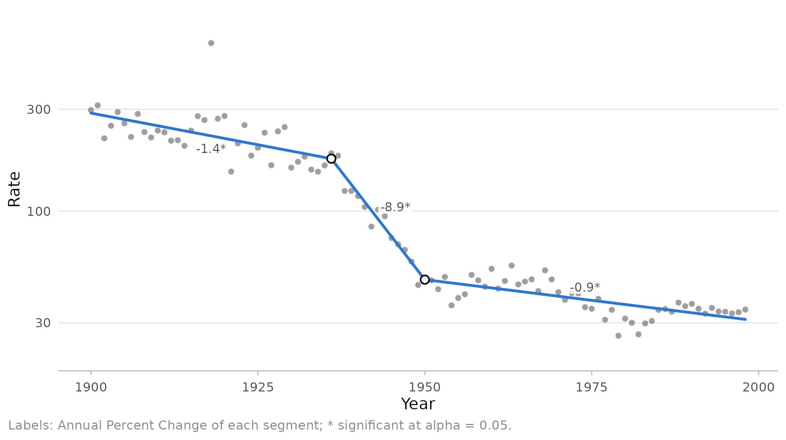
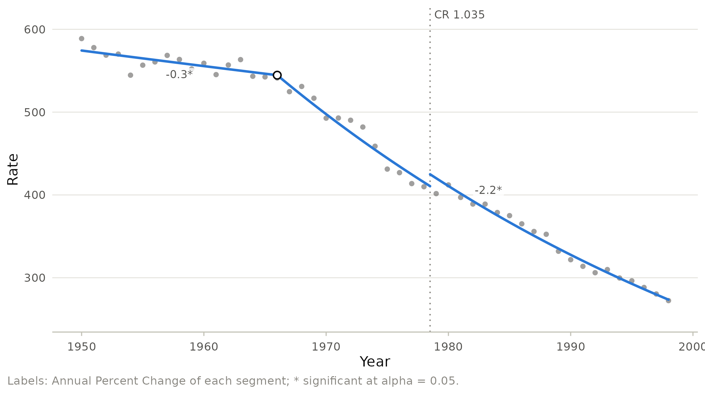

Breaks that are not trends: outliers and coding changes
Source:vignettes/coding-changes.Rmd
coding-changes.RmdJoinpoint regression assumes that the mean changes smoothly, with occasional changes of slope. Two kinds of events break that assumption: one-off anomalies, such as a pandemic year, and changes in how the outcome is recorded, such as a new revision of the International Classification of Diseases (ICD). Left alone, both distort the trend estimates. This vignette shows how to handle each.
A one-off anomaly: 1918
The 1918 influenza pandemic more than doubled mortality from influenza and pneumonia for a single year. A least squares fit treats that year as information about the trend:
flu <- subset(us_mortality, cause == "Influenza and Pneumonia")
fit_all <- joinpoint(flu, year, rate, kmax = 3, ci_method = "parametric")
autoplot(fit_all, log_y = TRUE)
The joinpoints, in 1936 and 1950, are not driven by 1918, but the single outlier inflates the residual variance and with it every interval. An excluded year is left out of the fit but kept in the data and the graph, drawn as a hollow point:
fit_ex <- joinpoint(flu, year, rate, kmax = 3, exclude = 1918,
ci_method = "parametric")
autoplot(fit_ex, log_y = TRUE)
merge(apc(fit_all)[, c("segment", "lower", "upper")],
apc(fit_ex)[, c("segment", "lower", "upper")],
by = "segment", suffixes = c("_all", "_without_1918"))
#> segment lower_all upper_all lower_without_1918 upper_without_1918
#> 1 1 -1.901468 -0.8078583 -1.758825 -0.8872720
#> 2 2 -11.200782 -6.5338731 -10.593322 -6.8695154
#> 3 3 -1.244888 -0.5313243 -1.180937 -0.6125138Without 1918 the intervals are about a fifth narrower. Exclusion is a statement that the year does not belong to the trend. It should be justified by external knowledge, as here, not by the size of the residual. The same tool handles the drop of cancer diagnoses in 2020, when screening was interrupted.
A coding change: the jump model
When the ICD changes, deaths move between categories overnight. The trend continues, but its level shifts. The jump model (Chen et al. 2020) adds a discontinuity halfway between the last year of the old coding and the first year of the new one and estimates its size along with the joinpoints. The ratio of rates after and before the change is the comparability ratio.
ICD-9 replaced ICD-8 in the United States in 1979. The jump model estimates the effect of this change on heart disease mortality:
heart <- subset(us_mortality, cause == "Heart Disease" & year >= 1950)
fit_jump <- joinpoint(heart, year, rate, kmax = 3, jump = 1978,
ci_method = "parametric")
jump_estimates(fit_jump)[, c("statistic", "estimate", "lower", "upper",
"p_value")]
#> statistic estimate lower upper p_value
#> 1 Jump value 0.03430509 0.008648136 0.05996203 0.009965438
#> 2 Comparability ratio 1.03490029 1.009094808 1.06070577 0.008031852
autoplot(fit_jump)
The estimated comparability ratio of about 1.03 says that heart disease death rates were about 3% higher under ICD-9 than they would have been under ICD-8, and its confidence interval excludes 1. Ignoring the change would have blurred the trend around 1979.
A jump estimated close to a joinpoint is confounded with the change of slope. For tuberculosis the model places a joinpoint at 1978, the last year of the old coding, right next to the jump at 1978.5:
tbc <- subset(us_mortality, cause == "Tuberculosis" & year >= 1950)
fit_tb <- joinpoint(tbc, year, rate, kmax = 3, jump = 1978,
ci_method = "parametric")
joinpoints(fit_tb)$estimate
#> [1] 1954 1978 1993
jump_estimates(fit_tb)[, c("statistic", "estimate", "se")]
#> statistic estimate se
#> 1 Jump value -0.3970586 NA
#> 2 Comparability ratio 0.6722946 NAIn the separate segment regressions used for standard errors, the jump then coincides with the start of a segment and cannot be separated from its intercept, so no standard error is available. Such a jump estimate should not be reported.
A known comparability ratio
When a bridge coding study has estimated the comparability ratio, it can be supplied instead of estimated. The rates before the change are multiplied by the ratio (with their standard errors updated by the delta method when standard errors are used), the model is fitted to the converted series, and fitted values before the change are divided back for display. The ratio below is illustrative, chosen to match the jump model estimate, not a published value.
fit_cr <- joinpoint(heart, year, rate, kmax = 3, jump = 1978,
comparability_ratio = 1.03, ci_method = "parametric")
apc(fit_cr)[, c("start", "end", "estimate", "lower", "upper")]
#> start end estimate lower upper
#> 1 1950 1966 -0.3349042 -0.5393043 -0.1300841
#> 2 1966 1998 -2.2141435 -2.2849902 -2.1432454A ratio from a double coding study of a similar population is the safer choice. When no such study exists, the jump model estimates the ratio from the series itself, at the price of confounding with any change of slope near the coding change.